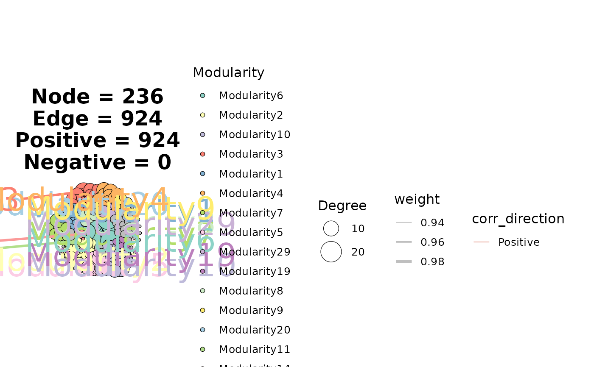
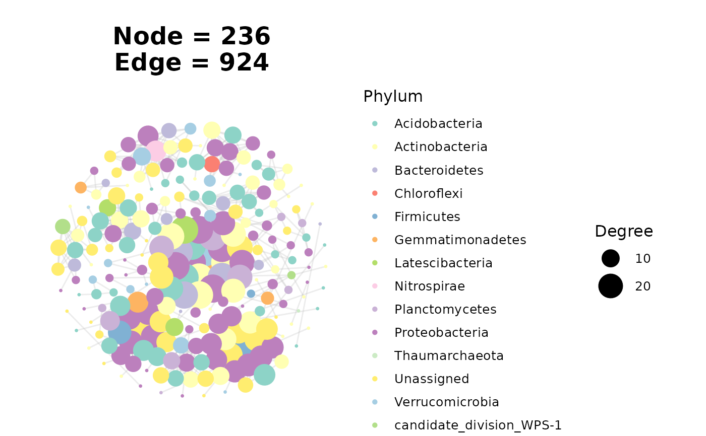

ggNetView() renders a tbl_graph produced by one of the
build_graph_from_*() builders with a deterministic, module-aware layout.
Since ggNetView 0.2.0 the plotting arguments follow a tidyverse-style
element_property naming scheme: node_* for nodes, edge_* for edges,
module_label_* for module text labels, module_outline_* for the per-module
boundary and network_outline_* for the whole-network circle. Every old
argument name is still accepted with a deprecation warning
(see Deprecated arguments below).
Usage
ggNetView(
graph_obj,
layout = NULL,
node_add = 7,
r = 1,
center = TRUE,
idx = NULL,
shrink = 1,
inner_shrink = 1,
k_nn = 12,
push_others_delta = 0,
layout_module = c("random", "adjacent", "order"),
group_by = "Modularity",
node_fill = "Modularity",
node_color = NULL,
node_shape = 21,
node_size = "Degree",
node_size_range = c(1, 10),
node_alpha = 1,
node_stroke = 0.3,
node_fill_values = NULL,
node_color_values = NULL,
node_jitter = FALSE,
node_jitter_sd = 0.1,
node_label = NULL,
node_label_size = 5,
show_edges = TRUE,
edge_color = "grey70",
edge_color_values = NULL,
edge_width = 0.5,
edge_width_range = c(0.2, 1.5),
edge_linetype = 1,
edge_alpha = 0.25,
edge_curve = FALSE,
edge_curvature = 0.25,
module_label = FALSE,
module_label_size = 10,
module_label_segment_width = 1,
module_label_segment_alpha = 1,
module_label_layout = c("two_column", "two_column_follow", "label_circle"),
module_label_wrap = NULL,
module_label_pad = 0.25,
module_outline = FALSE,
module_outline_q = 0.88,
module_outline_expand = 1.02,
module_outline_bandwidth = 2,
module_outline_width = 1,
module_outline_linetype = 1,
module_outline_alpha = 0.5,
network_outline = FALSE,
network_outline_expand = 2,
network_outline_color = "grey50",
network_outline_fill = NULL,
network_outline_fill_alpha = 0.2,
network_outline_linetype = 1,
network_outline_width = 0.5,
hide_others = FALSE,
drop_others = FALSE,
orientation = "up",
angle = 0,
scale = TRUE,
anchor_dist = 6,
nrow = NULL,
ncol = NULL,
seed = 1115,
scale_radius = NULL,
return_layout = FALSE,
fill.by = deprecated(),
color.by = deprecated(),
shape = deprecated(),
pointsize = deprecated(),
pointalpha = deprecated(),
pointstroke = deprecated(),
fill = deprecated(),
color = deprecated(),
jitter = deprecated(),
jitter_sd = deprecated(),
pointlabel = deprecated(),
pointlabelsize = deprecated(),
nodelabsize = deprecated(),
ring_n = deprecated(),
plot_line = deprecated(),
linecolor = deprecated(),
mapping_line = deprecated(),
linealpha = deprecated(),
curve = deprecated(),
curvature = deprecated(),
label = deprecated(),
labelsize = deprecated(),
labelsegmentsize = deprecated(),
labelsegmentalpha = deprecated(),
label_layout = deprecated(),
label_wrap_width = deprecated(),
label_outer_pad = deprecated(),
add_outer = deprecated(),
q_outer = deprecated(),
expand_outer = deprecated(),
bandwidth_scale = deprecated(),
outerwidth = deprecated(),
outerlinetype = deprecated(),
outeralpha = deprecated(),
add_group_outer = deprecated(),
add_group_outer_expand = deprecated(),
add_group_outer_color = deprecated(),
add_group_outer_fill = deprecated(),
add_group_outer_fill_alpha = deprecated(),
add_group_outer_linetype = deprecated(),
add_group_outer_linewidth = deprecated(),
layout.module = deprecated(),
group.by = deprecated(),
remove = deprecated(),
dropOthers = deprecated()
)Arguments
- graph_obj
A
tbl_graphfrombuild_graph_from_mat()or any otherbuild_graph_from_*()builder. The network object to be visualized.- layout
Character string naming the layout, dispatched to the internal
create_layout_<layout>()function. Popular choices:"gephi","fr","kk","stress","circle","square","square2","petal","petal2","heart_centered","diamond","star","star_concentric","rectangle","rightiso_layers","WGCNA","circlepack","bipartite_gephi_layout","tripartite_gephi_layout","circular_modules_*". An unknown name errors with the full list of available layouts.- node_add
Integer (default = 7). Number of nodes to add in each layer of the layout.
- r
Numeric (default = 1). Radius increment for concentric or layered layouts.
- center
Logical (default = TRUE). Whether to place a node at the center of the layout.
- idx
Optional. Index of nodes to be emphasized or centered in the layout.
- shrink
Numeric (default = 1). Shrinkage factor applied to the center points.
- inner_shrink
Numeric (default = 1). Intra-module compactness factor for
layout = "WGCNA"only. Controls how tightly nodes fill each module's allocated disc during the WGCNA bubble-pack layout: at1(default) nodes spread to fill 95 percent of the disc (original behaviour); smaller values (e.g.0.65) contract the FR/uniform fill toward each module centre, exposing hub/periphery structure and producing visible inter-module whitespace. Module disc centres and radii are invariant underinner_shrink; this parameter only affects the point cloud inside each module. Ignored by all other layouts.- k_nn
Numeric (default = 12). Number of nearest neighbors used to build the local adjacency graph for
layout_module = "adjacent"/"order".- push_others_delta
Numeric (default = 0). Radial offset applied to the "Others" module to push it slightly outward from the rest of the network.
- layout_module
Character (default =
"random"). How modules are arranged relative to each other:"random": modules are distributed more randomly and independently."adjacent": modules are positioned close to each other, minimizing inter-module gaps."order": modules are distributed by order; required by the*partite*andmultiringslayouts.
- group_by
Character (default =
"Modularity"). Node column used to group nodes into modules (drives module labels and top-N node labels)."pie"switches to the scatterpie rendering path.- node_fill
Character (default =
"Modularity"). Node fill: a node column name (mapping) or a single colour (constant). Categorical columns usescale_fill_ggnetview()(ornode_fill_values); numeric columns use a blue-red gradient. For shapes without a fill slot (0-20) the mapping is applied to the point colour instead.- node_color
Character or NULL (default = NULL). Node border colour: a node column name (mapping) or a single colour (constant). Numeric columns use
scale_color_gradient(), otherwisescale_color_ggnetview()/node_color_values.- node_shape
Integer or character (default = 21). ggplot2 point shape (constant) or a node column name (mapping; shapes 21-25 are cycled).
- node_size
Character or numeric (default =
"Degree"). Node size: a numeric node column name (mapping, scaled tonode_size_range) or a single number (constant size).- node_size_range
Numeric length-2 (default =
c(1, 10)). Size range used whennode_sizeis a mapping.- node_alpha
Numeric (default = 1). Node alpha.
- node_stroke
Numeric (default = 0.3). Node border width.
- node_fill_values
Named colour vector or NULL (default = NULL). Manual palette for a categorical
node_fillmapping, e.g.c("1" = "red", "2" = "blue").NULLusesscale_fill_ggnetview(). Whennode_fillis a module field this palette is also used for module labels and module outlines.- node_color_values
Named colour vector or NULL (default = NULL). Manual palette for a categorical
node_colormapping.- node_jitter
Logical (default = FALSE). Whether to jitter node positions.
- node_jitter_sd
Numeric (default = 0.1). Standard deviation of the jitter applied when
node_jitter = TRUE.- node_label
Character or NULL (default = NULL). Text labels for the top-degree nodes within each module:
"topN"(e.g."top1","top7") or"ALL".- node_label_size
Numeric (default = 5). Node label size.
- show_edges
Logical (default = TRUE). Whether to draw edges.
- edge_color
Character (default =
"grey70"). Edge colour: an edge column name (mapping) or a single colour (constant)."corr_direction"(added by the correlation builders) colours positive edges red and negative edges blue and adds the positive/negative counts to the title. Numeric columns use a blue-red gradient.- edge_color_values
Named colour vector or NULL (default = NULL). Manual palette for a categorical
edge_colormapping.- edge_width
Character or numeric (default = 0.5). Edge line width: an edge column name (mapping, e.g.
"weight", scaled toedge_width_range) or a single number (constant).- edge_width_range
Numeric length-2 (default =
c(0.2, 1.5)). Line-width range used whenedge_widthis a mapping.- edge_linetype
Character, integer or NULL (default = 1). Edge linetype: an edge column name (mapping) or a single linetype (constant).
- edge_alpha
Numeric (default = 0.25). Edge alpha.
- edge_curve
Logical (default = FALSE). Draw curved edges.
- edge_curvature
Numeric (default = 0.25). Curvature of curved edges.
- module_label
Logical or character (default = FALSE). Controls module text labels and the module legend prefix.
FALSE: no module text labels, legend prefix"Modularity".TRUE: draw labels, legend prefix"Modularity". A string: draw labels and use that string as prefix for module text and legend labels.- module_label_size
Numeric (default = 10). Module label size.
- module_label_segment_width
Numeric (default = 1). Width of the module label leader segment.
- module_label_segment_alpha
Numeric (default = 1). Alpha of the module label leader segment.
- module_label_layout
Character (default =
"two_column"). Strategy used to place module text labels whenmodule_labelis notFALSE. One of:"two_column"(default): modules whose centroidxis left of the network median go to a fixed left column, the rest to a fixed right column, with labels evenly distributed alongy. Best for very crowded networks or layouts that read left-to-right (bipartite, grid)."two_column_follow": 360-degree ring layout with two-segment "L-shape" leaders. Modules are sorted by their actual angle from the network centroid and assigned angularly equispaced target angles around the full circle, so labels are evenly distributed around the network while preserving the angular neighbour order. Each label is projected onto an outer ellipse whose semi-axes are(1 + module_label_pad)times the network's half-width / half-height. The first leader leg runs from the module centroid to an elbow on the network boundary; the second leg is drawn byggrepelfrom the label back to that elbow."label_circle": like"two_column_follow"but every label sits at its module's true angle on the outer ellipse andggrepeldraws an L-shaped leader (segment.square = TRUE).
- module_label_wrap
Integer or NULL (default = NULL). If a positive integer, module text labels are wrapped to roughly that many characters per line via
stringr::str_wrap().- module_label_pad
Numeric (default = 0.25). Fractional outward push of the label anchors: a multiple of the network's
x-range ("two_column") or the fractional enlargement of the outer label-anchor ellipse ("two_column_follow","label_circle"). Try0.20for a tight layout,0.40for more breathing room,0.55+when modules sit inside a thicknetwork_outlinering or labels are long.- module_outline
Logical (default = FALSE). Draw a smooth outer boundary around each module. The boundary is computed by 2D kernel density estimation followed by a Highest-Density-Region (HDR) contour: it encloses the densest portion of each module rather than all of its points. A module whose points fall into two well-separated clouds may produce two disconnected polygons.
- module_outline_q
Numeric (default = 0.88). HDR coverage of the module outline: the contour is drawn at the density level whose iso-density region contains a fraction
module_outline_qof the module's probability mass. Higher values are more inclusive (closer to the convex hull). Modules with fewer than 10 nodes bypass the KDE path and use a convex hull.- module_outline_expand
Numeric (default = 1.02). Multiplicative scaling applied to each outline polygon from its own centroid (> 1 expands, < 1 shrinks).
- module_outline_bandwidth
Numeric (default = 2). Multiplier on the robust normal-reference 2D KDE bandwidth used to build the module outline (> 1 smoother/wider, < 1 tighter).
- module_outline_width
Numeric (default = 1). Module outline line width.
- module_outline_linetype
Integer or character (default = 1). Module outline linetype.
- module_outline_alpha
Numeric (default = 0.5). Module outline alpha.
- network_outline
Logical (default = FALSE). Draw a circle around the entire network (via
ggforce::geom_mark_circle()).- network_outline_expand
Numeric (default = 2). Expansion in mm of the network circle; passed to
geom_mark_circle(expand = ).- network_outline_color
Character (default =
"grey50"). Border colour of the network circle.- network_outline_fill
Character or NULL (default = NULL). Fill colour of the network circle;
NULL= transparent.- network_outline_fill_alpha
Numeric (default = 0.2). Fill alpha of the network circle.
- network_outline_linetype
Integer or character (default = 1). Linetype of the network circle.
- network_outline_width
Numeric (default = 0.5). Line width of the network circle.
- hide_others
Logical (default = FALSE). Hide the
"Others"module at the visualization stage only (post-layout), so the layout of the remaining modules is unchanged.- drop_others
Logical (default = FALSE). Remove
"Others"nodes fromgraph_objbefore layout, then recompute layout and plot from the reduced graph.- orientation
Character string (default =
"up"). Orientation for directional layouts:"up","down","left","right".- angle
Numeric (default = 0). Rotation angle of the layout.
- scale
Logical (default = TRUE). Whether the
*partite*layouts scale the module radius.- anchor_dist
Numeric (default = 6). Distance between modules in the
*partite*layouts.- nrow, ncol
Integer (default = NULL). Grid dimensions for
layout = "consensus_module_equal_gephi"/"consensus_module_gephi".- seed
Integer (default = 1115). Random seed for reproducibility.
- scale_radius
Numeric or NULL (default = NULL). When non-NULL, scale the layout so the network fits within this radius. Used by
ggnetview_modularity_heatmaps()for coordinate alignment.- return_layout
Logical (default = FALSE). When TRUE, return a list with
$plot(ggplot) and$layout_data(graph_ly_final,graph_obj,ggplot_data,module_centroids) for downstream use (e.g. adding heatmaps and links).- fill.by, color.by, shape, pointsize, pointalpha, pointstroke, fill, color, jitter, jitter_sd, pointlabel, pointlabelsize, nodelabsize, ring_n, plot_line, linecolor, mapping_line, linealpha, curve, curvature, label, labelsize, labelsegmentsize, labelsegmentalpha, label_layout, label_wrap_width, label_outer_pad, add_outer, q_outer, expand_outer, bandwidth_scale, outerwidth, outerlinetype, outeralpha, add_group_outer, add_group_outer_expand, add_group_outer_color, add_group_outer_fill, add_group_outer_fill_alpha, add_group_outer_linetype, add_group_outer_linewidth, layout.module, group.by, remove, dropOthers
![[Deprecated]](figures/lifecycle-deprecated.svg) Old argument names kept for backward
compatibility; see the Deprecated arguments section for the new name
of each one. Using them emits a deprecation warning and the value is
forwarded to the new argument.
Old argument names kept for backward
compatibility; see the Deprecated arguments section for the new name
of each one. Using them emits a deprecation warning and the value is
forwarded to the new argument.
Column name or literal value
node_fill, node_color, node_shape, node_size, edge_color,
edge_width and edge_linetype accept either the name of a column in
the node / edge table of graph_obj (an aesthetic mapping) or a
literal value (a fixed colour, shape code, size, ...). A single string that
matches a column name is treated as a mapping; anything else is used as a
constant.
Deprecated arguments
The following arguments were renamed in 0.2.0 and
will be removed in a future release. Old names keep working but emit a
lifecycle::deprecate_warn() message.
| Old | New |
fill.by | node_fill |
color.by | node_color |
shape | node_shape |
pointsize | node_size_range |
pointalpha | node_alpha |
pointstroke | node_stroke |
fill | node_fill_values |
color | node_color_values + edge_color_values |
jitter, jitter_sd | node_jitter, node_jitter_sd |
pointlabel, pointlabelsize | node_label, node_label_size |
plot_line | show_edges |
linecolor, mapping_line | edge_color (mapping_line = TRUE is edge_color = "corr_direction") |
linealpha | edge_alpha |
curve, curvature | edge_curve, edge_curvature |
label, labelsize | module_label, module_label_size |
labelsegmentsize, labelsegmentalpha | module_label_segment_width, module_label_segment_alpha |
label_layout, label_wrap_width, label_outer_pad | module_label_layout, module_label_wrap, module_label_pad |
add_outer, q_outer, expand_outer, bandwidth_scale | module_outline, module_outline_q, module_outline_expand, module_outline_bandwidth |
outerwidth, outerlinetype, outeralpha | module_outline_width, module_outline_linetype, module_outline_alpha |
add_group_outer* | network_outline* (..._linewidth is network_outline_width) |
layout.module, group.by | layout_module, group_by |
remove, dropOthers | hide_others, drop_others |
ring_n, nodelabsize | removed (they had no effect) |
Examples
# \donttest{
library(ggNetView)
data("otu_rare_relative")
data("tax_tab")
graph_obj <- build_graph_from_mat(
mat = otu_rare_relative, transfrom.method = "none",
r.threshold = 0.7, p.threshold = 0.05, method = "WGCNA",
cor.method = "pearson", proc = "bonferroni",
module.method = "Fast_greedy", node_annotation = tax_tab,
top_modules = 15, seed = 1115
)
# tidyverse-style arguments (>= 0.2.0)
ggNetView(graph_obj, layout = "gephi",
node_fill = "Modularity", node_shape = 21,
edge_color = "corr_direction", edge_width = "weight",
module_label = TRUE)

# solid shapes (no fill slot): the fill mapping is applied to colour
ggNetView(graph_obj, layout = "gephi", node_shape = 16, node_fill = "Phylum")

# }